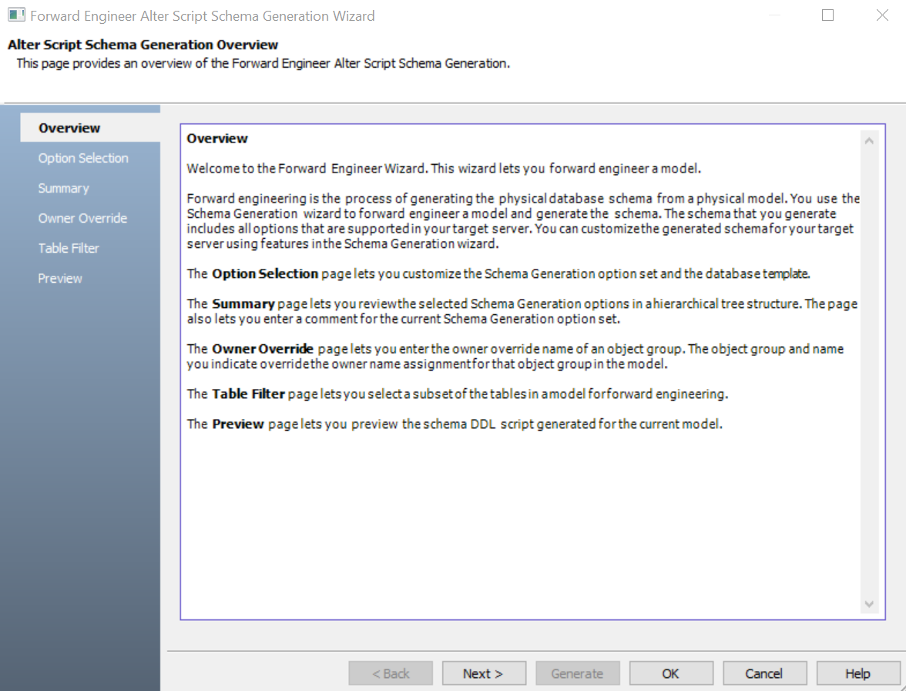
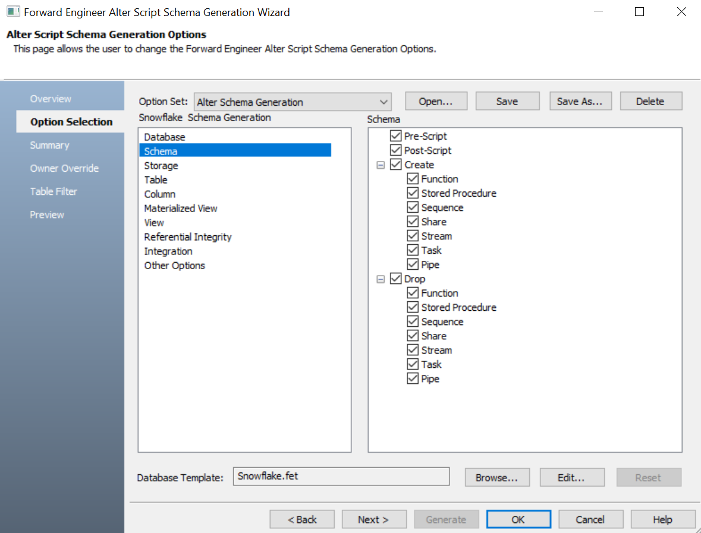
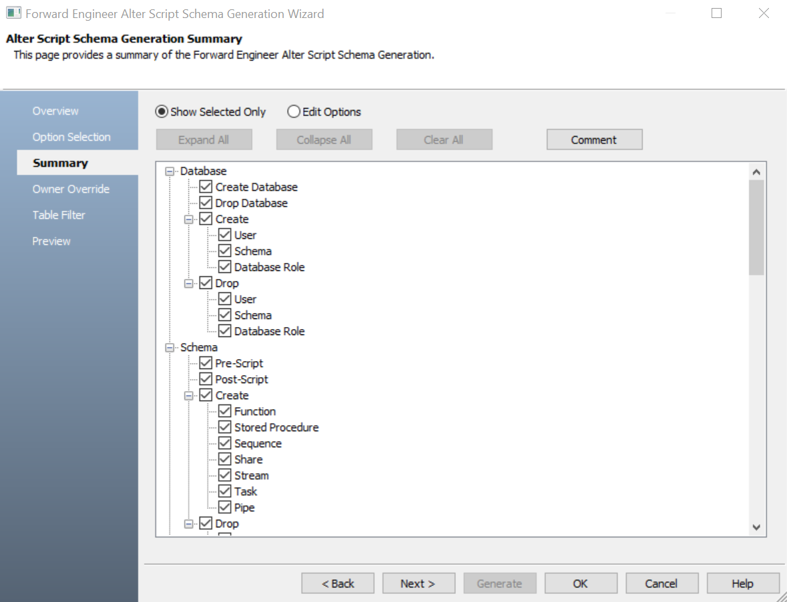
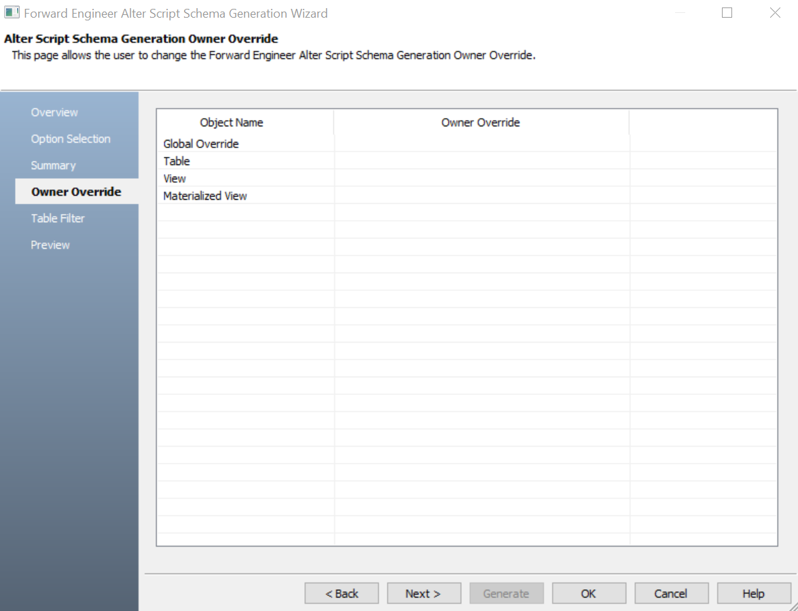
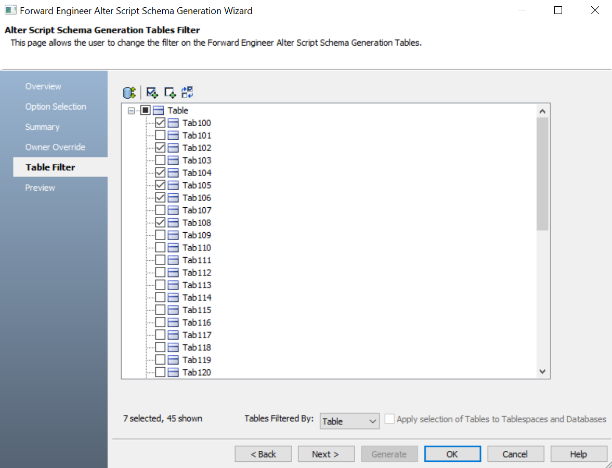
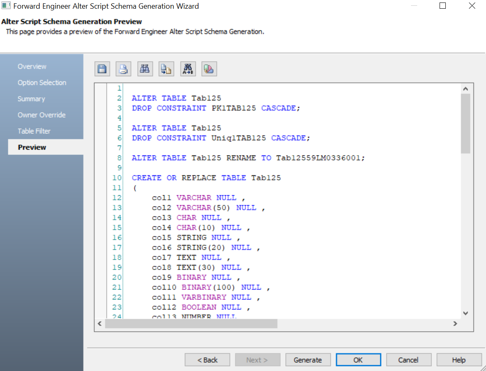
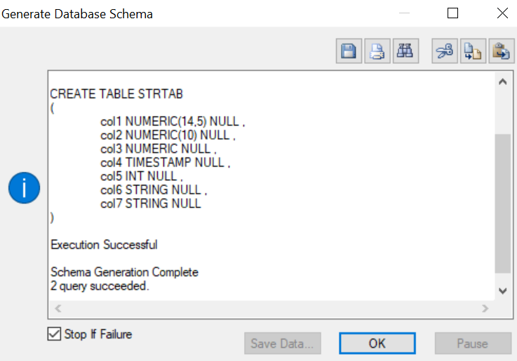

Ensure that you are in the Physical mode.
The Forward Engineering Alter Script Schema Generation Wizard appears.

The Option Selection section displays the default option set. Select schema generation group to select schema generation options based on your requirements.
Similarly, you can select schema generation syntax options for other databases.

The Summary section appears. It displays the selected options for schema generation.

The Owner Override section appears. It displays objects for owner override.

The Global Override section is not available for all databases.
The Table Filter section appears. It displays a list of tables available in the model. Similarly, you can filter Collections or Records for other databases.

Similarly, you can select Collections or Records for other databases based on your requirement.

On the Preview section, use the following options:
-
Save (
 ): Use this option to save the generated script in JSON or BSON format.
): Use this option to save the generated script in JSON or BSON format. -
Print (): Use this option to search for a word or characters in the schema.
-
Search (
 ): Use this option to search for a word or characters in the schema.
): Use this option to search for a word or characters in the schema. -
Copy (
 ): Use this option to copy the script.
): Use this option to copy the script. -
Replace (
 ): Use this option to find and replace characters in the script.
): Use this option to find and replace characters in the script. -
Text Options (
 ): Use this option to configure the preview text editor's look and feel, such as window, font, syntax color settings. For more information, refer to the Forward Engineering Wizard - Preview Editor topic.
): Use this option to configure the preview text editor's look and feel, such as window, font, syntax color settings. For more information, refer to the Forward Engineering Wizard - Preview Editor topic.
The forward engineering process starts. The script generates the physical database schema. You can view and verify the generated alter script for the database.
